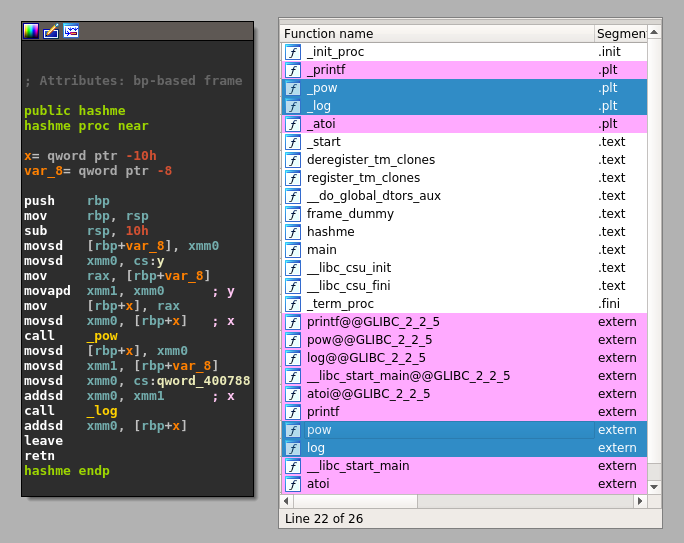
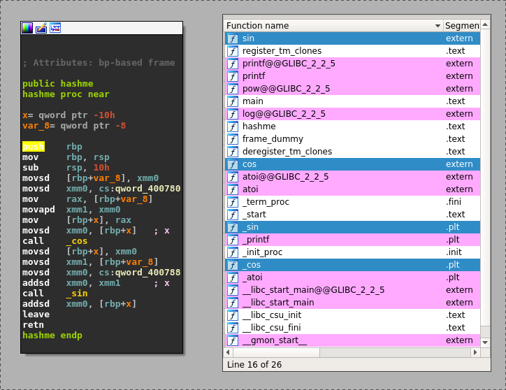

03 - Play with ELF symbols¶
In this tutorial we will see how to modify dynamic symbols in both a binary and a library.
Scripts and materials are available here: materials
By Romain Thomas - @rh0main
When a binary in linked against a library, the library needed is stored in a DT_NEEDED entry from the
dynamic table and the needed functions needed are registered in the dynamic symbols table with the following attributes:
Similarly, when a library exports functions it has a DT_SONAME entry in the dynamic table and the functions
exported are registered in the dynamic symbols table with the following attributes:
Imported and exported functions are abstracted by LIEF thus you can iterate over these elements with exported_functions and imported_functions
import lief
binary = lief.parse("/usr/bin/ls")
library = lief.parse("/usr/lib/libc.so.6")
print(binary.imported_functions)
print(library.exported_functions)
When analyzing a binary, imported function names are very helpful for the reverse engineering. One solution is to link statically the binary and the library. Another solution is to blow mind the reverser’s mind by swapping these symbols.
Take a look at the following code:
#include <stdio.h>
#include <stdlib.h>
#include <math.h>
double hashme(double input) {
return pow(input, 4) + log(input + 3);
}
int main(int argc, char** argv) {
if (argc != 2) {
printf("Usage: %s N\n", argv[0]);
return EXIT_FAILURE;
}
double N = (double)atoi(argv[1]);
double hash = hashme(N);
printf("%f\n", hash);
return EXIT_SUCCESS;
}
Basically, this program takes an integer as argument and performs some computation on this value.
$ hasme 123
228886645.836282
{kind=link}

The pow and log functions are located in the libm.so.6 library. One interesting trick to do with LIEF is
to swap this function name with other functions name. In this tutorial we will swap them with cos and sin functions.
First we have to load both the library and the binary:
#!/usr/bin/env python3
import lief
hasme = lief.parse("hasme")
libm = lief.parse("/usr/lib/libm.so.6")
Then when change the name of the two imported functions in the binary:
hashme_pow_sym = next(filter(lambda e : e.name == "pow", my_binary.imported_symbols))
hashme_log_sym = next(filter(lambda e : e.name == "log", my_binary.imported_symbols))
hashme_pow_sym.name = "cos"
hashme_log_sym.name = "sin"
finally we swap log with sin and pow with cos in the library and we rebuild the two objects:
#!/usr/bin/env python3
import lief
hasme = lief.parse("hasme")
libm = lief.parse("/usr/lib/libm.so.6")
def swap(obj, a, b):
symbol_a = next(filter(lambda e : e.name == a, obj.dynamic_symbols))
symbol_b = next(filter(lambda e : e.name == b, obj.dynamic_symbols))
b_name = symbol_b.name
symbol_b.name = symbol_a.name
symbol_a.name = b_name
hashme_pow_sym = next(filter(lambda e : e.name == "pow", my_binary.imported_symbols))
hashme_log_sym = next(filter(lambda e : e.name == "log", my_binary.imported_symbols))
hashme_pow_sym.name = "cos"
hashme_log_sym.name = "sin"
swap(libm, "log", "sin")
swap(libm, "pow", "cos")
hashme.write("hashme.obf")
libm.write("libm.so.6")
{kind=link}

With this script, we built a modified libm in our current directory and we have to force the Linux loader to use this one when executing binary.obf.
To do so we export LD_LIBRARY_PATH to the current directory:
$ LD_LIBRARY_PATH=. hashme.obf 123
228886645.836282
If we omit it, it will use the default libm and hash computation will be done with sin and cos:
$ hashme.obf 123
-0.557978
One real use case could be to swap symbols in cryptographic libraries like OpenSSL. For example EVP_DecryptInit and EVP_EncryptInit have the same prototype so we could swap them.